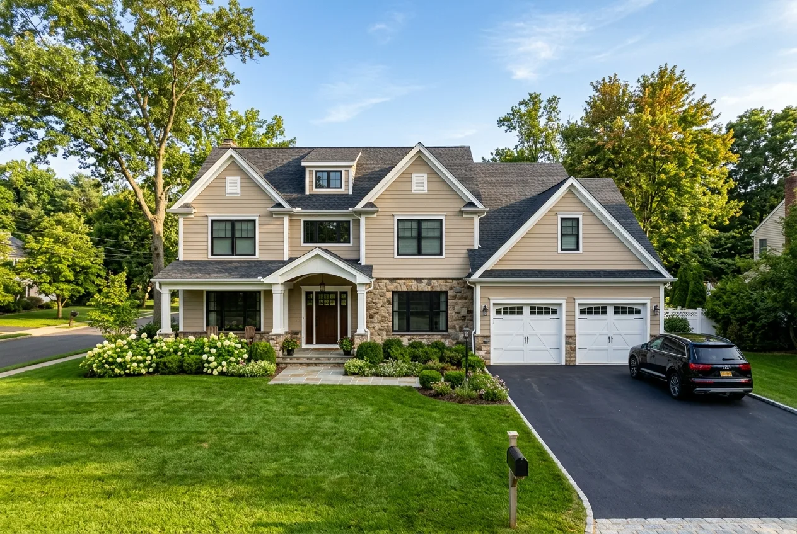
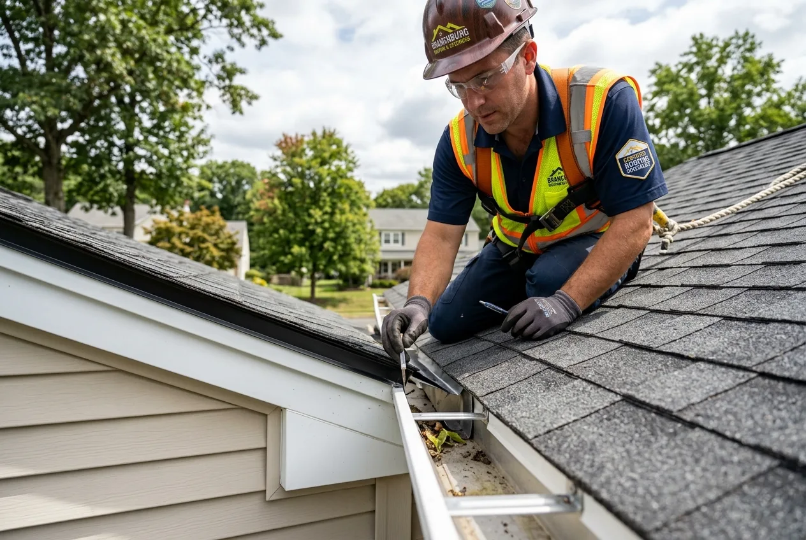

Precision Roof Repair
Fast, durable repairs for wind-damaged shingles, valley leaks, rusted flashing channels, and cracked pipe collars across Branchburg.
Explore Roof RepairBridgewater Roofer is your premier roofing company and trusted local roofer in Branchburg, NJ. We provide master architectural shingle replacements, prompt leak repairs, storm wind restorations, and heavy-duty agricultural and residential re-roofing across Somerset County.

Whether addressing wind-lifted shingles, aging rubber pipe boots, or planning a full architectural shingle replacement, our local crews provide prompt diagnostics.

Branchburg Township spans a scenic, diverse landscape in central Somerset County, flanked by the North Branch and South Branch of the Raritan River. The community features a mixture of established mid-century ranches, split-levels, and expansive contemporary colonials built across developments like Country Club Meadows, alongside historic properties in Neshanic Station and corporate campuses along the Route 202 and Route 22 commercial corridors.
Branchburg homes contend with specific environmental factors. Proximity to the Raritan River basin generates elevated humidity, morning fog, and damp microclimates that encourage black algae streaking (Gloeocapsa magma) on north-facing roof pitches. In addition, open suburban parcel layouts leave roofs exposed to sweeping westerly wind gusts that lift and snap brittle 3-tab shingles, while severe winter freezes produce ice dams at eave transitions.
Bridgewater Roofer delivers specialized solutions designed for Branchburg’s housing stock. From installing algae-resistant architectural shingles (featuring copper-infused granules) and complete ice-barrier membrane underlayments to replacing rotted plywood decking and flashing pipe boots, our team ensures your property remains secure through every season.
From precision emergency leak repairs and storm restoration to complete shingle replacements, commercial membranes, seamless gutters, skylights, and siding.
Fast, durable repairs for wind-damaged shingles, valley leaks, rusted flashing channels, and cracked pipe collars across Branchburg.
Explore Roof RepairFull tear-offs down to bare decking, plywood inspection, synthetic underlayments, ice barriers, and 50-year architectural shingles.
Explore Roof ReplacementSystematic moisture diagnostics using infrared tracing to isolate hidden water intrusion paths behind siding, chimneys, and rafters.
Explore Leak RepairImmediate priority dispatch to secure exposed roof decking with heavy-duty weather tarps after winter blizzards or severe storms in Branchburg.
Emergency Roofing ServicesCertified storm restoration, insurance claim documentation, hail impact analysis, and emergency shingle replacement throughout Branchburg.
Explore Storm RepairGAF Timberline HDZ and CertainTeed Landmark architectural shingles engineered for Somerset County weather swings and curb appeal.
Residential SystemsLow-slope roofing membranes, commercial leak containment, and preventative maintenance for retail, medical, and office buildings in Branchburg.
Commercial RoofingDetailed physical evaluations for real estate transactions, insurance underwriting certifications, and aging roof lifespan evaluations.
Schedule InspectionUltra-durable concealed-fastener standing seam metal roofing with 50+ year longevity, Class 4 hail resistance, and energy efficiency.
Explore Metal RoofingWatertight low-slope flat roofs, positive-drainage tapered ISO insulation packages, and commercial-grade parapet wall flashing for Branchburg.
Explore Flat RoofingHeat-welded reflective white TPO and weather-resistant vulcanized EPDM rubber membranes engineered for maximum energy savings and reliability.
Explore Single-PlyCustom on-site seamless 5" and 6" aluminum gutters, micro-mesh leaf filtration screens, and commercial 3x4 downspouts across Branchburg.
Explore GuttersCertified Velux® deck-mounted skylight installations, solar-powered shades, leak-free step flashing integration, and acrylic dome repairs.
Explore SkylightsJames Hardie® fiber cement and CertainTeed insulated vinyl siding, custom aluminum fascia wrap, Tyvek® barriers, and freeze-thaw defense.
Explore SidingOpen winds, river valley humidity, and aging flashing materials trigger common leak locations. Select any component below to view the diagnostic profile.
Branchburg colonials with multi-gable rooflines channel massive volumes of rain through intersecting valleys. Aged shingle cuts or rusted metal in the valley create fast-moving attic leaks.
Installing full double-layer ice & water shields beneath new architectural shingles or heavy-gauge painted metal open valleys.
From Raritan River corridor humidity to open winter plains, Branchburg roofs require year-round resilience.
Spring storm systems push heavy rainfall across valleys, exposing deteriorated flashing seams and testing gutter drainage capacity.
River corridor humidity accelerates moss and algae growth on north slopes, while 90°F heat waves test attic ventilation airflow.
Mature trees throughout Branchburg subdivisions drop heavy leaf loads that accumulate in roof valleys and trap moisture against shingles.
Frequent temperature fluctuations between daytime melt and freezing nights cause ice dams along uninsulated eave lines.
We adapt materials and installation techniques to suit every neighborhood throughout the 08876 community.
Two-story suburban residences with multi-gable rooflines requiring dimensional architectural shingles and balanced ridge exhaust.
Long, low-pitch roof planes requiring specialized low-slope underlayment, enhanced intake ventilation, and durable eave protection.
Older Victorian and farmhouse properties requiring meticulous flashing fabrication, custom metal work, and historic styling.
Flat TPO and EPDM roofing membranes for corporate offices, distribution facilities, and retail centers along Route 202 and Route 22.
We provide straightforward recommendations based on roof age, granule condition, and structural decking integrity.
Best when underlying shingles remain flexible and the leak source is isolated.
Recommended when the shingle mat is brittle or widespread leaks threaten home interiors.
From seamless township permitting to rigorous magnetic cleanups, our systematic 8-step process delivers reliable execution.
Responsive phone discussion to understand your roof concern, timeline, and property specifics.
Comprehensive roof surface evaluation, flashing check, attic decking assessment, and photos.
Transparent written proposal with exact material options, clear milestones, and competitive pricing.
Complete permit filing with Branchburg Township Building Department (1077 US-202).
Heavy tarps, plywood siding protectors, and driveway boards safeguard landscaping and pavers.
Tear-off, decking re-fastening, ice & water barrier installation, and precision shingling.
Multiple magnetic sweeps across all lawns, flowerbeds, and driveways to clear every stray nail.
Final walkthrough with you, project sign-off, and delivery of registered warranty documentation.
In Branchburg Township, full roof replacements and structural decking repairs require a building permit filed with the Branchburg Township Building Department located at 1077 US-202, Branchburg, NJ 08876. Under New Jersey Uniform Construction Code (UCC) rules, ice barrier membranes must extend at least 24 inches past interior wall lines, and all installations must meet local wind-resistance standards.
Bridgewater Roofer manages the complete permit application process, engineering specifications, and municipal inspections on your behalf, ensuring seamless compliance.
Every estimate is customized to the specific square footage, pitch, and materials of your home.
Square footage and steep pitches require additional materials, staging equipment, and labor time.
Homes with two existing layers of shingles require additional disposal and labor fees to reveal bare plywood decking.
Choices between standard architectural shingles and premium high-definition laminate shingles determine system lifespan and warranty.
Any water-damaged, deteriorated CDX plywood identified during tear-off must be replaced to ensure manufacturer warranty validation.
Get a precise, itemized estimate customized for your Branchburg home.
Call (908) 465-9944 for an Itemized EstimateLocal accountability, certified master craftsmen, and ironclad manufacturer warranties make us the preferred Somerset County roofer.
Based directly adjacent in Bridgewater, our staging yards and crews reach Branchburg in minutes.
Full New Jersey Home Improvement Contractor licensing plus comprehensive general liability and workers' compensation.
Certified installation techniques unlock complete non-prorated manufacturer warranty protection on new roofing systems.
Extensive tarping, lawn shielding, and multiple magnetic sweeps protect your property and landscaping.
Real feedback from property owners throughout central New Jersey.
"We noticed shingles blowing into our backyard after a severe thunderstorm in Branchburg. Bridgewater Roofer arrived promptly the next morning, performed an honest assessment, and replaced the damaged section seamlessly. Fantastic service."
"Complete roof replacement on our colonial off Route 202. The crew showed up right at 7:30 AM, protected all our shrubbery with heavy tarps, and had the old roof stripped and new architectural shingles installed in one day. Very impressed."
"They handled the entire township permit process with Branchburg and coordinated the inspection. The new roof looks phenomenal and our attic is noticeably cooler this summer thanks to their ridge vent system."
Based right next door in Bridgewater, we deliver rapid dispatch throughout central Somerset County.
Central headquarters and main staging yard providing rapid dispatch for residential and commercial roofing.
Bridgewater Roofing HubDirectly adjacent borough along the Raritan River featuring compact residential streets and storm repairs.
View Raritan ServicesSomerset County seat with historic Victorians, mixed residential properties, and downtown commercial roofs.
View Somerville ServicesNeighboring township south across the river basin with extensive subdivisions and high wind exposure.
View Hillsborough ServicesDirectly north in the Somerset Hills horse country, featuring master-planned communities and estates.
View Bedminster ServicesWatchung ridge community to the northeast with steep hillside properties and specialized tree canopy protection.
View Martinsville ServicesCommon questions regarding roof replacements, leak repairs, permits, and costs in Branchburg Township.
Yes. Bridgewater Roofer provides prompt residential and commercial roof repairs throughout Branchburg (ZIP 08876) and Neshanic Station. We resolve roof leaks, missing shingles, deteriorated pipe flashings, chimney leaks, and storm damage.
Yes. The Branchburg Township Building Department (1077 US-202) requires a construction permit for re-roofing. We handle all paperwork, technical documentation, and coordinate the required final municipal inspection.
Due to the moisture from the North and South Branch Raritan River corridors, we install architectural shingles featuring copper-infused ceramic granules (such as GAF StainGuard Plus or CertainTeed StreakFighter) that prevent algae discoloration for up to 25 years.
We install Class F 130-MPH wind-rated architectural shingles using enhanced 6-nail fastening patterns and Dura Grip adhesive seals, ensuring your roof withstands open suburban wind gusts.
Because our operations are based right next door in Bridgewater, we offer rapid same-day emergency tarping and temporary leak containment following windstorms or tree limb impacts.
Yes. We install, repair, and maintain commercial single-ply TPO and EPDM flat roof systems for business parks, offices, and industrial properties along Route 202 and Route 22 in Branchburg.
Most single-family residential roof replacements in Branchburg are completed within 1 business day. Larger multi-pitch homes may take up to 2 days, including complete cleanup.
We deploy protective tarps and plywood shields around the entire home perimeter, place trailers on wood blocking to protect driveways, and run magnetic sweepers across all lawn and paved surfaces.
Professional insights on roof longevity, storm resilience, and cost planning.
Detailed breakdown of square footage, shingle types, and labor costs for central New Jersey homes.
Read Cost GuideUnderstanding copper-infused granules and how to prevent black algae stains on humid roof planes.
Explore Shingle TypesEssential steps to inspect and protect your roof before and after severe seasonal storms.
Read Storm ChecklistWhether you need prompt storm damage diagnosis, architectural shingle replacement, or an honest roof condition inspection, our local team is ready to assist.